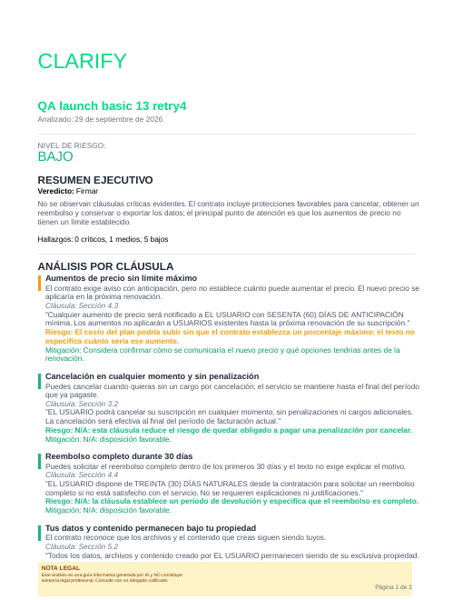

Clarify v2.0 — Launch Verification
Phase 13 sign-off — exercised path: https://clarify.cativo.dev — generated 2026-09-30
LAUNCH-01 — Deploy tracer & worker end-to-end
| What was tested | Result | Evidence |
|---|
| HTTPS health (200), HTTP→HTTPS redirect (301), HSTS, valid TLS cert | PASS | evidence/02-deploy.md |
| Basic analysis submitted over HTTPS, processed exactly once by the production BullMQ worker, v2.1 structured fields present | PASS | evidence/03-launch-01.md |
LAUNCH-02 / LAUNCH-03 — PDF export & caching
| What was tested | Result | Evidence |
|---|
First export (cached=false) renders a valid, legible 2-page PDF stored privately; unauthenticated / public-bucket access rejected | PASS | evidence/04-launch-02-03.md |
Second export (cached=true) served byte-identical (sha256 match), unchanged stored-object metadata — no regeneration | PASS | evidence/04-launch-02-03.md |

Rendered PDF, page 1
Clarify report title, executive summary, clause-level findings, legal disclaimer — all present and legible.
LAUNCH-04 — Forensic UI (Phase 01 UAT Test 4 closure)
| What was tested | Result | Evidence |
|---|
| Completed Forensic analysis with every section populated (37 hallazgos, 3 cross-clause findings, 14 omissions, full structural map, 100% coverage) | PASS | evidence/05-launch-04.md |
| All 11 UI checks (C1-C11): executive summary, risk panel, clause findings, section index + click-to-scroll, cross-clause analysis, critical omissions, structural map, coverage %, no horizontal overflow, zero console errors | PASS | evidence/05-launch-04.md |
Flagged assumptions & deviations
- 24-hour signed-URL expiry window not exercised — only the immediate round-trip was verified.
- Concurrent first-time exports are idempotent by design (storage upsert), not independently load-tested.
- Mobile-width (390px) layout check not performed — no resize tool available this session.
- Auth mechanism: AUTH_MODE=browser throughout — all authenticated calls driven as same-origin fetch from an already-authenticated session, not a stored token.
/api/health proves Redis connectivity only; its database/ai fields are hardcoded, not live checks.- Six same-day hotfix releases (v1.0.0-alpha.21–26) and one database migration were shipped during this phase's verification, each for a real bug found live — see
13-LAUNCH-CHECKLIST.md for the full list.
- Stripe live webhook / live price IDs are out of LAUNCH scope and not verified — production currently runs Stripe test-mode keys.